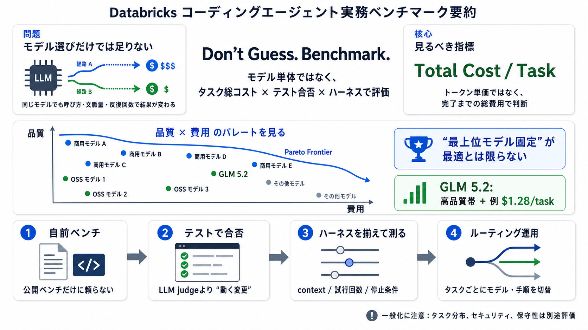

GLM-5.2 Benchmarks: Open Weights vs Claude Opus 4.8
# GLM-5.2 benchmarks: an open model at the*frontier’s* edge. Three days after GLM-5.2 shipped to the GLM Coding Plan wit…

# GLM-5.2 benchmarks: an open model at the*frontier’s* edge. Three days after GLM-5.2 shipped to the GLM Coding Plan wit…
GLM 5.2 vs Opus 4.8: Cheaper AI Code, Hidden Risks? Snyk 14900 subscribers 14 likes 269 views 29 Jun 2026 GLM 5.2 just l…
With more options, it has become increasingly important to understand which coding agents offer the best performance on …
Where GLM 5.2 BEATS Claude Opus 4.8 On Code Arena Frontend, GLM 5.2 ranks #2 with an Elo of 1,595 ahead of Claude Opus 4…
Those benchmarks are valuable, but they do not isolate whether a model can read a large supplied context and retrieve ex…